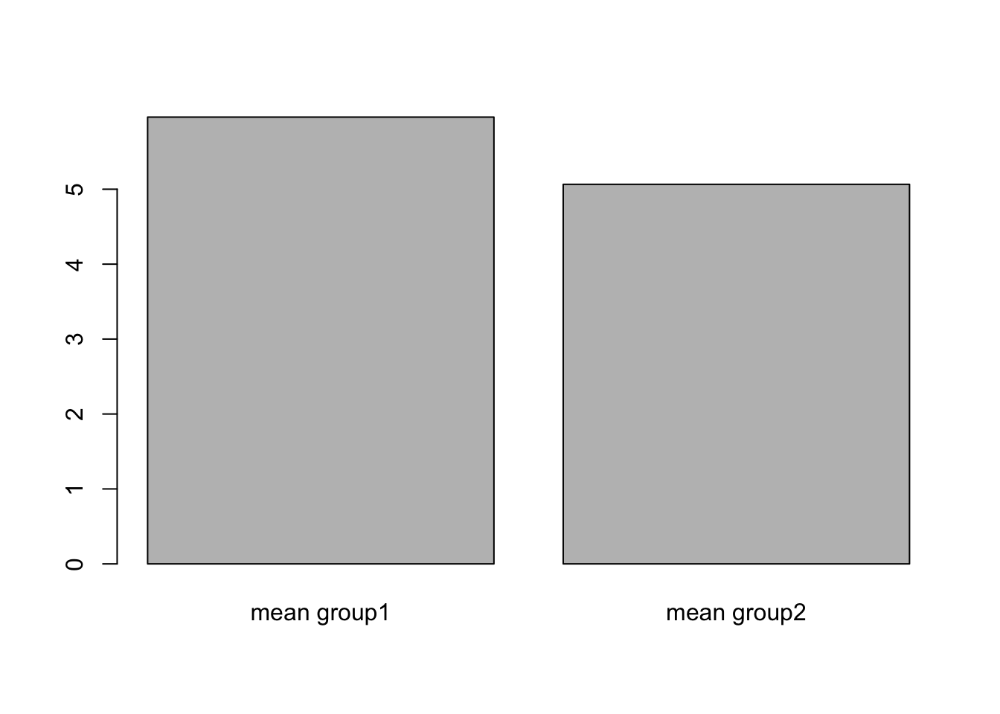
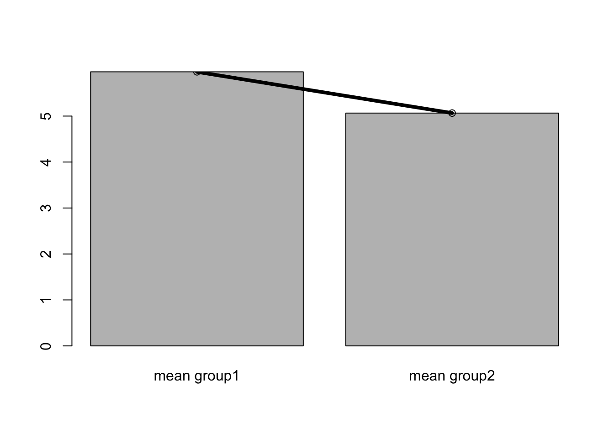
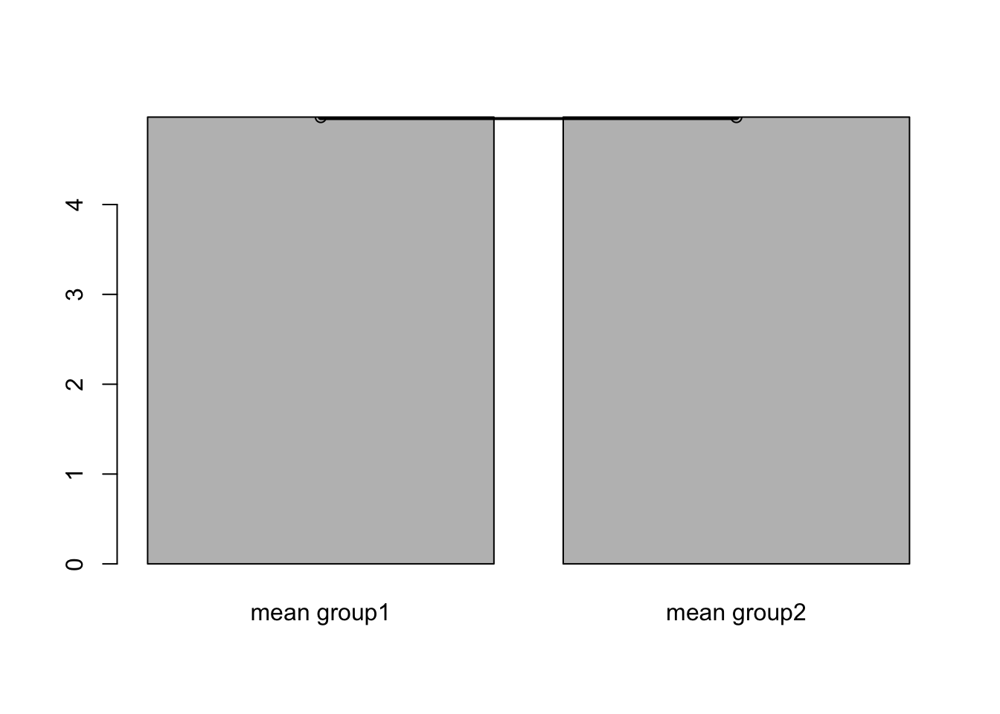

Chapter 2 Introduction
The point of this document is to provide a place for the reader to have space to think about statistical methods pragmatically, to give opportunity to consider how the set of tools can be used to give clarity to the hypotheses that the reader wants to test in their own work.
‘It’s for biologists, right. You think biologists are bad at this.’
No! Well, yes and no! I don’t think anyone is ‘bad’ at this, I think a lot of biologists are really great at this and biology is a broad field.
There are a lot of biology that works almost entirely in maths, like epidemiologists and population geneticists.
I think a lot of biologists with a molecular or biochemistry or genetics or field background have only a vague conceptual framework about stats, one that leaves them with the idea that doing stats is all about picking the right test and then they’re ok. They might have gone through a post-graduate course that introduced them to a lot of tests and a lot of conditions that must be fulfilled and that there is one ‘right’ test to use in any given situation. This can be re-inforced by the presence of colleagues with eidetic memories that seem to remember all the conditions and can suggest the ‘right’ test to them in lab meetings or manuscript writing. It can seem like everything is arbitrary and dislocated without any guiding theme (or that the coherence between things is esoteric and available only to those wizards with the keys to the executive stats toilet).
If you are a biologist whose prior experience has left them feeling that the entire process is a bit of an incomprehensible mess, then this course is for you.
The point of this course will be to introduce to you a common theme across all the tests we commonly use as biologists. It may suprise you that this commonality will be based on a simple formula for a straight line - something usually called regression in the statistical literature. We will look at the barebones of this and see how it relates to some seemingly unrelated ideas you are trying to apply in tests and see how by thinking of regression in your work then you can quickly come to a clearer understanding of hypothesis testing and application of statistical methods in your own work.
2.1 Models in biology, models in stats
Models are basically what science does. Everything we know is a model.
Our theories and understandings of a phenomenon are models, the pictures we draw to understand them are models. Across biology there are a wide range of models, from the formula heavy epidemiology ones, to the flow diagrams we see in representations of chemical reactions and the interaction graphs we see in molecular biology, all are abstractions and simplifications of what is real.
There is an aphorism in stats -
All models are wrong. Some models are useful
This really means that in some way all models leave something out, none are complete. But despite this they can still give us insights. Models don’t need to ‘predict’ anything or need to be made of formula to be more or less valid. Let’s consider some very different models that are useful in specific ways.
2.1.1 The zig-zag-zig model in plant disease immunity
nickname of RZA in the Wu-Tang Clan.
2.2 Slopes of straight lines can help us think about differences between samples
Straight lines are a way of thinking about differences between samples because we can make use of their slope to see whether there is a difference between the samples.
Let’s consider these data
| group1 | group2 |
|---|---|
| 5.321749 | 4.306031 |
| 6.772834 | 5.258848 |
| 6.248925 | 5.013706 |
| 4.842696 | 5.143682 |
| 6.330838 | 6.495088 |
| 6.256860 | 4.173726 |
In the beginning of our scientific education we might’ve plotted them as barcharts, by taking the mean, like this.

Imagine drawing a line between the tops of the bars, like this:

The slope of that line tells us about the difference in the means. If it is flat no difference, if it isnt flat maybe there is a difference.

And that is the logic we will be following in this little book. All we will do is learn to look for a slope of a line. We’ll look at using a statistical tool called a linear model, which tries to create a straight line that matches the data, so is contains the equation of a straight line but elaborates on the equation alone by providing measures of believability about the slope and other things. The technique we will learn will give us a framework for thinking about performing hypothesis testing in all sorts of comparisons including \(t\)-tests, ANOVA etc and with elaborations we’ll be able to see how to use the same framework for the other class of tests that we often use, the non-parametric tests.